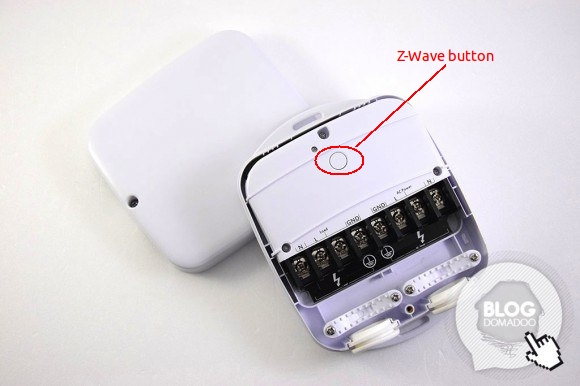

Heavy Duty Smart Switch Gen5¶
Brief information¶
- Heavy Duty Smart Switch Gen5 is an on/off switch module that also provides energy metering.
- Z-Wave Certification ID: ZC10-14090014
- Frequency Region: U.S./Canada/Mexico, Z-Wave Library Version: 6.51.01
- Device Categories: All Lighting Devices,On/Off Switches/Devices
- Supported Command Classes: Basic,All Switch,Association,AGI,Binary Switch,Configuration,Firmware Update,Meter,Multilevel Sensor,Powerlevel,Scene Activation,Security
How to add to VENUS app¶

- Newly add to VENUS network
- Press “Add button” (button ‘+’) in app
- Power-up the device
- Press z-wave button
- Wait for VENUS scan & detect this device and inform in app
- Reset before adding
- Press “Add button” (button ‘+’) in app
- Press Z-Wave button once (to reset device)
- Press Z-Wave button once more (to add)
- Wait for VENUS scan & detect this device and inform in app
Factory reset¶
- Power-up device
- Press and hold z-wave button for 20 seconds
Note: when hold more than 1 second, LED blinks faster and faster. When holding more than 20 seconds, LED is on in 2 seconds.
Configuration description¶
Enable overload protection
- When enable this function, load will be closed when the current more than 39.5A and the time more than 5 seconds.
- Available:
- Enable overload protection
- Disable overload protection
Default: Disable
Parameter 3, 1 byte size
Enable notification when load changes
- Enable to send notifications to associated devices when the state of Heavy Duty Smart Switch Gen5’s load changed.
- Available:
- Disable notification
- Hail notification
- Basic notification
Default: Disable
Parameter 80, 1 byte size
Enable report for threshold change (in Watt)
- Auto report when usage Watt in device over threshold.
- Available:
- Disable auto report
- 1 ~ 60000 watts
Default: 50
Parameter 91, 2 bytes size
Enable report for threshold change (in percentage)
- Auto report when usage percentage in device over threshold.
- Available:
- Disable auto report
- 1 ~ 100 percentage
Default: 10
Parameter 92, 1 byte size
Enable auto report when load changes
- Available:
- Enable auto report
- Disable auto report
Default: Enable
Parameter 90, 1 byte size
Enable lock configuration
- This setting allows device to be configured or not.
- Available:
- Enable configuration setting
- Disable configuration setting
Default: Enable
Parameter 252, 1 byte size